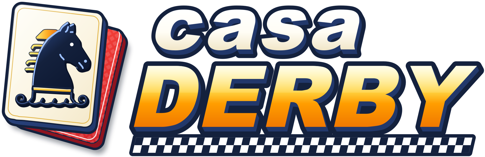
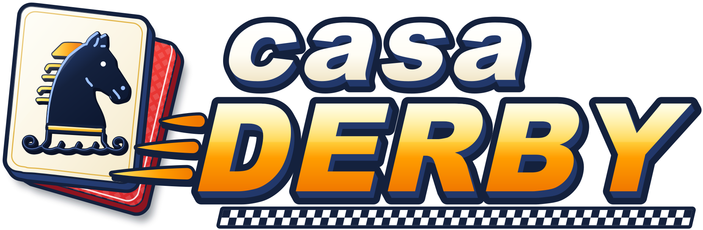

第1レース
1000m
芝
晴れ
締切まで
30
LIVE
チャンス
ボール
音
メダル
0
応援！
レース結果
第1レース
審議
タイム
0:00.0
上がり3F
00.0
CHANCE!
ボーナスルーレット
REPLAY
写真判定
PHOTO FINISH
1着
1
番
獲得
0
枚
倍率
10倍未満
10倍〜
100倍〜
1マス 99枚まで
単勝 1
—
0
枚
当たれば
0
枚
合計
0
枚
応援
1枚
BET
10枚
BET
取消
全消し
レース スタート
START
馬券を買ってレースを待とう！

6 頭立て メダル競馬ゲーム
TAP TO START
決定ボタン（Enter）でもスタートできます
音
k3
端末を横向きにしてご利用ください